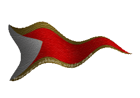
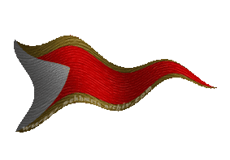

|

|
Das schwarze Brett
|
|
| Übersicht,
Anschläge und Stammtisch (RPG) |
|
Kultstätte zu Ehren Olimanirs (14  ) )
|
Demogorgon
|
~Ein in einen schwarzen, zerschlissenen Mantel gehüllte Person betritt langsam und etwas schwerfällig das Podest am Marktplatz. Sein Blick schweift über die vorbei eilenden Leute und mit klarer und fester Stimme ruft er aus~
Hört her Scherblinge!
Heute wurde im Schutze hoher Mauern eine Tempel zu Ehren der einzig wahren Göttin, Olimanir, errichtet.
Endlich gibt es eine weitere Stätte, wo ein jeder Scherbling den göttlichen Segen der einzig wahren Herrin zu empfangen.
Dieser Ort, in dem man auf jede nur erdenkliche Weise, unsere Göttin huldigen kann, steht offen für ein jeden, der den Weg des wahren Glaubens beitreten möchte.
Wendet Euch ab von den Götzen der sogenannten Lichtsieben und kommt zurück zu den wahren Göttern.
~einen kurzen Moment wartet er noch ehe er weiterspricht~
Selbstredent wird ein jedem, der voller Demut und wahrem Beweggrund zu uns stößt, geholfen, die Seelen, welche wir erreten und Olimanir zum Opfer darringen, zu erhalten.
~er rollt das Pergament wieder ein, schaut über die versammelte Menge und verschwindet wieder in der Dunkelheit der Seitenstraßen~
Demogorgon |
13.07.10 14:56
|
|
someone
 |
*traut seinen ohren nicht, als er mitbekommt, mit welcher dreistigkeit dieser mann dies in aller öffentlichkeit verkündet, und steht fassungslos da und wartet darauf das irgendwer irgendwas macht. sein mund steht offen und er blickt zu den ebenso verwirrten leuten*
...gibts ja nich.
Ritter someone
Zur 15. Stunde am 2.Dunkelfrost im Jahre 442 |
13.07.10 15:06
|
|
Asmodai
|
~ Eine hochgewachsene Gestalt schlendert um den Marktplatz , er hält plötzlich inne als er eine Stimme vernahm die ihm bekannt vorkommt~
*Die Gestalt mit hochgezogener Kapuze bleibt stehen und lauscht den Worten der Person mit dem dunklen schwarzen Mantel*
Die Gestalt murmelt leise zu sich selbst,
mein Bruder ich wird sofort Deinen Tempel besuchen und unserer Herrin Opfer darbringen,
zufällig habe ich derzeit Seelen bei mir die nur darauf warten in unser Reich übertreten zu dürfen.
Soll dieser Tempel ewig stehen auf Scherbe und neue Scherblinge von unseren Glauben überzeugen.
*Mit diesen Worten, wendet sich die Dunkle Gestalt ab, setzt sich in eine Kutsche nahe des Marktplatzes , bringt mich zum Tempel der einzig wahren Göttin Kutscher, raunt Ihr ihm zu*
Asmodai |
13.07.10 15:37
|
|
wollium v. glänzenen wolfstern
  |
Friedliebende Bürger dieser Scherbe und Anhänger der Lichtsieben. Haltet Augen und Ohren auf und teilt einem Priester der Lichtsieben mit wenn ihr irgendwelche Informationen habt wo dieser Tempel stehen mag. Es wird schnellstmöglich eine Untersuchung veranlasst.
Vielen Dank im vorraus
Hohepriester Wollium v. glänzenen Wolfstern,
Vorsteher von Wolfsglut,
Hohepriester im Dienste des einzig wahren Glaubens an Tura
Verkünder des Glaubens an Tura
Zur 2. Stunde am 3.Dunkelfrost im Jahre 442 |
13.07.10 17:33
|
|
Shalir Norcain-Blutsäufer
  |
*Er lauscht den Worten der hier anwesenden und muss sich ein Lachen verkneifen. Es war interesannt den Schergen der Absieben bei ihrem Treiben zu beobachten, noch amüsanter fand er allerdings das alle so verblüfft waren das es nun offiziel einen solchen Tempel gab.*
Etwas Naiv oder?
Ich befinde mich bereits seit längerem auf der suche nach diesen Tempeln der Finsterniss, auch ich nehme gerne hinweise entgegen doch bezweifle ich das es so einfach sein wird diese zu finden...
Demogorgon ich denke Ihr habt Euch hier grade ins Eigene Fleisch geschnitten... Sobald jeamand den Tempel Eurer Gottheit gefunden hat werde ich beim niederreißen dessen helfen...
*er lacht wieder und sein Gesicht ist Kurz gedanken versunken. Schließlich dreht er sich um und Geht ein Kinderlied summend vom Platz um sich auf die Suche nach dem Tempel zu begeben.*
Sir Shalir Norcain,
Vorsteher von Godrics Hollow,
Kardinal im Dienste des einzig wahren Glaubens an Urvan
Zur 16. Stunde am 3.Dunkelfrost im Jahre 442 |
13.07.10 20:49
|
|
| Chevonne Siobhan (RIP) |
Um kurz Eure Frage zu beantworten, Sir Norcain. Ja, Ihr seid naiv. Nicht nur etwas, sondern sehr.
Lady Siocán Siobhán,
Vorsteherin von Tortuga,
The Blue Lady
Zur 23. Stunde am 5.Dunkelfrost im Jahre 442 |
14.07.10 9:50
|
|
Shalir Norcain-Blutsäufer
|
*lächelt*
Dankeschön.
Sir Shalir Norcain,
Vorsteher von Godrics Hollow,
Kardinal im Dienste des einzig wahren Glaubens an Urvan
Zur 2. Stunde am 6.Dunkelfrost im Jahre 442 |
14.07.10 10:22
|
|
Demogorgon
|
~nach einiger Zeit kommt Demogorgon erneut am Marktplatz vorbei. Zufrieden, wieviel Anklang er durch seinen Aufruf erfahren durfte, betritt er erneut den Podest~
Scherblinge, Bürger und Bürgerinnen!
Ihr habt die freie Wahl! Nein, wir, die Anhänger der einzig wahren Sieben, wir zwingen keinen von Euch zu uns zu stoßen.
Ebensowenig liegt es mir fern, Euch, so denn ihr denn diesen Lichtgötzen folgt, Eure Tempelanlagen zu verbieten!
Nein! Wir tolerieren den anderen Glauben - auch wenn wir ihn nciht zwingend gut heißen mögen!
Aber das, was diese sogenannten Hohepriester, Ja, Vetreter eines Glaubens, der von Sterblichen infiltriert ist, von sich geben, zeigt Euch doch nur, wer die wahren "bösen" sind!
Diese selbsternannten "Guten" sind es, die eben diese Toleranz nicht an den Tag legen wollen!
~immer wieder macht er eine kleine Pause und lässt seinen Blick über die Menge schweifen~
Ihr habt die Wahl! Und ich weiß, ein jeder von Euch wird den wahren Weg finden - der eine früher
~wobei er diversen Personen ins Gesicht zu lächeln scheint und ab und an ein leichtes Nicken zu erkennen ist~
die Anderen später. Aber seid gewiss, es ist nie zu spät um das Richtige zu tun! Olimanir wird für jeden von Euch, der sich ihr anschließt, mit einer Macht ausstatten, welche zweifelsohne ihresgleichen sucht!
Wie lange schon wird versucht uns zu denunzieren, unsere heiligen Hallen zu zerstören?
Haben sie es jemals geschafft? NEIN!
Wie oft schon wurde versucht Euch durch Lügen und fiktiven Fakten zu blenden?
Haben sie es jemals bei Euch geschafft? NEIN!
So bin ich mir sicher - Nein, ich weiß, dass ihr auch deismal Euch nicht durch Hetzkampagnen, die jeder Grundlage entbehren, manipulieren lasst!
~schaut dann noch einige Minuten in die Gesichter der Anwesenden ehe er den Marktplatz erneut in der dunklen Seitengasse verlässt~
Demogorgon |
14.07.10 10:45
|
|
| Chevonne Siobhan (RIP) |
Gern geschehen, Sir Norcain.
Lady Siocán Siobhán,
Vorsteherin von Tortuga,
The Blue Lady
Zur 8. Stunde am 6.Dunkelfrost im Jahre 442 |
14.07.10 11:49
|
|
| Heindal (RIP) |
Werte Gemeinde,
diese unerhörten Worte dieser Demogorgen, äh Demagogen muss entgegen getreten werden! Ich unterstütze meinen Bruder Shalir hier in allen Punkten ...
Da diese Ungläubigen hier von Wahrheit und Fakten reden, habe ich euch eine kleine Auflistung ihrer Sünden erstellt ...
*Holt ein Rolle Papier hervor und entrollt sie mit einem Ruck so das sie kurz vor dem Boden endet.*
Fakt ist: Das Asmodai gab zu sein eigenes, bzw das von ihm entführte, Kind zu töten und prahlte sogar damit in dem er die Asche an öffentlichem Platze verstreute.
Fakt ist: dies tat er im Namen seiner Herrin Olimanir.
Fakt ist: Dies wurde nie geleugnet oder bestritten, denn es geschah an öffentlich Platze am hellichten Tage unter den Augen vieler Zeugen.
Fakt ist: Somit hat die Herrin Olimanir zumindest einen Kindermörder in ihren Reihen. Da somit die Herrin Olimair selbst vor Kindern nicht zurückschreckt ist die Frage welche Schrecken die geopferten Sklaven erleiden müssen oder alle die der Herrin Olimanir im Wege stehen?
Die Lehre, oder sollte man besser Leere sagen?, von Olimanir ist somit die Lehre der Ignoranz. Der Ignoranz der Leiden Anderer und allem was lebt.
Fakt ist: Die Herrin Olimanir, bzw. ihre Anhänger die den Glauben an ihre Götze im eigenen Sinne und im Sinne ihres eigenen Vorteils interpretieren, brachten Seuche und Pest über die Lande und nur die Turapriester waren für die Menschen und Bewohner der Städte da und brachten den Menschen Heilung und Erlösung. Dieser tausendfache Mord ist den Jüngern Olimanirs zuzuschreiben! Von Überfällen von Untoten auf Städte und Dörfer ganz zu schweigen.
*rollt das Papier wieder auf*
Ein paar abschließende Worte ...
Natürlich werden Leiden anderer durch die Absieben ignoriert, von ignoranten Bastarden die, scheinbar, gerne kleine Kinder ermorden.
Jetzt wird die Bürgerschaft umworben und mit Angst und Tücke in den Glauben der Olimanir gepresst. Wie eine Bande unverhohlener Schutzgelderpresser sagen sie euch: "Wir töten eure Kinder wenn ihr nicht beitretet!"
*ballt seine Hände zu Fäusten und blickt gen Himmel*
Oh ihr Lichtsieben, möge ein Sturm über dieses unseelige Gebäude kommen, die diese Häretiker Tempel nennen und es in seinen Grundfesten niederreißen.
Sir Heindal,
Vorsteher von Reinga,
Kardinal im Dienste des einzig wahren Glaubens an Urvan
Zur 16. Stunde am 6.Dunkelfrost im Jahre 442 |
14.07.10 13:49
|
|
Demogorgon
|
~gellend lachend hat Demogorgon die Worte des, dem Met wohl eher als seinem Massenmordenden Gott zugewandten Heindal.
Langsam schreitet er durch die Menge der Leute, welche sich teilt um ihm den Durchgang zu gewähren~
Sir Heindal,
So Ihr denn hier mit Fakten meint um Euch werfen zu müssen, so werde ich auch einmal einige Fakten zur Sprache bringen.
Zu allererst einmal, Ja, unser Bruder Asmodai opferte sein Kind zu Ehren Olimanirs, um auch diesem Lebewesen die Macht zuteil werden zu lassen.
Wenn Ihr auch nur einmal Euren Metschlach beiseite legen würdet, so würdet Ihr auch wissen, dass es dem Jungen gut geht - Olimanir schickte ihn erneut auf die Scherben - mit all unserer Macht ausgestattet.
Dann redet gerade der Urvankonvent von Morden an uunbeteiligten und Unschuldigen? An Frauen und Kindern?
~er spuckt dem Kardinal lachend vor die Füße~
Wenn Ihr auch nur einmal die Wichtelmeldungen sondiert ~wobei er sich an die Menge wendet und seinen Blick über die zuhörenden Gesichter schweifen lässt~
so werdet Ihr schnell erkennen, wieviele tausend und abertausend Bürger von Städten durch die Glaubenskrieger Urvans, und den anderen sechs Lichtgötzen, ihr unschuldiges Leben geben mussten.
Auch hier waren Frauen und Kinder unter den Opfern!
~während er sich wieder umdreht um Heindal direkt ins Antlitz zu schauen~
Heindal, ich an Eurer Stelle würde aufpassen, denn Olimanir überhört sicher nicht mehr lange Eure lachhaften Anschuldigungen und haltlosen Behauptungen über unsere Herrin und Ihr Gefolge.
Lange schon, hat sie sich mit kleinen Warnungen zufrieden gegeben, wo Ihr schon längst Eure gesamte Kraft aufgewendet hätte - Jedoch ist Olimanir eine Göttin, welche sich auf ernstzunehmende Kreaturen Konzentriert - Ihr dagegen seit nur eine Kopie eines Narren...
Verzeiht, aber ich wollte den anständigen Berufsstand des Narren nicht beschmutzen...
~nach einer kurzen Verweilpause dreht er sich erneut um und entschwindet, nachdem er mit dem einen oder anderen noch kurz ein paar Worte wechselte, wieder in den kleinen Gassen der Stadt~
Demogorgon |
14.07.10 14:00
|
|
| asteria (RIP) |
Lasst doch den Verblendeten links oder rechts liegen oder stehen.
Ich bin mir sicher, die Götter der Lichtsieben werden ihn, sie, schon richten.
Ein Wort noch an den Verkünder der Dunkelheit, wenn ihr euch rühmt, das die Lichtsieben noch niemals eure "heiligen" Hallen zerstörren konnten, nun warum sagt ihr uns nicht wo sich diese Hallen befinden?
Die Heiligen Hallen der Lichtsieben stehen einem Jeden offen und ein Jeder kann seine Verfehlung bereuen und zu einem der wahren 7 Götter übertreten.
Hohepriester asteria,
Vorsteher von Pforte zu Loh,
Hohepriester im Dienste des einzig wahren Glaubens an Larja
Zur 2. Stunde am 7.Dunkelfrost im Jahre 442 |
14.07.10 16:03
|
|
Plagenbringer
|
*Der Verkünder Plagenbringer lächelt bei den Worten seines Bruders. Am Ende seiner letzten Ansprache tritt er an in heran*
Glückwunsch zu deiner weiteren Kultstätte unserer Göttin Olimanir! Gerne stelle ich dir 100 Sklaven zur Verfügung, um den Altar gebührend einzuweihen!
Vergiss die Worte dieser verblendeten Narren! Die Läuterung steht nahe.
Plagenbringer |
14.07.10 16:48
|
|
Sìn Mortiarea
   |
Werter Sir Heindal,
Euch ist doch sicher bewusst, dass Tortuga in letzter Zeit häufiger von kämpfenden Gläubigen Eures Gottes aufgesucht wird. Und in Tortuga leben auch Kinder. Es beklagten nach diesen "Besuchen" schon einige Familien den Verlust ihrer Kinder.
Lady Sìn Mortiarea
Zur 12. Stunde am 12.Dunkelfrost im Jahre 442 |
15.07.10 22:11
|
|
| Heindal (RIP) |
Ja, sie sind in die Ordensschule eingetreten und haben vor sich als Ritter Urvans ausbilden zu lassen.
Oder die ketzerischen Eltern haben ihre Kinder gegessen oder ihren Schöpfern geopfert wie Asmodai, dessen Kind - bzw. das Abbild oder der Schatten eines Kindes als Zombie dann wiederbelebt wurde, wenn man der Propaganda Plagenbringers und seiner Hündchen Glauben schenken darf, was ich nicht tue.
Apropos Kindermord, wieviele Frauen, Kinder und Babies kamen denn bei den Angriffen der Minotauren auf Longisland um, die dafür bekannt sind tausende von Sklaven in ihren Minen und Gebäuden zu "verbrauchen", Herrführerin der Minotauren?
Fühlende, denkende Wesen werden von den Minotauren und Paktieren wie Waren zu transportiert und wie Tiere gehalten ...
*schaudert sichtlich bei der Vorstellung*
Eure Selbstgerechtigkeit widert mich an Sin, da ihr euch nicht einmal davor scheut euch nach den Minotauren nun auch bei den Olimanirpaktierern anzubiedern und ihre vermoderten Stiefel zu lecken ...
Pah ...
Sir Heindal,
Vorsteher von Reinga,
Kardinal im Dienste des einzig wahren Glaubens an Urvan
Zur 2. Stunde am 58.Dunkelfrost im Jahre 442 |
26.07.10 13:36
|
|
Demogorgon
|
~von einem dach der an den Marktplatz angrenzendeb Häuser schaut Demogorgon sich an, wie dieser Trunkenbold Heindal wieder und wieder versucht sich und die Seinen durch hohle verbale Angriffe zu schützen oder besser gesagt von den eigenen Schandtaten abzulenken~
Höret her ihr Bürger der Scherbe!
Hier haben wir das volltrunkene Beispiel eines typischen Urvankardinals...
~dabei streckt er richtend seine Hand Richtung Heindal aus~
Anstatt sich seiner Fehler zu stellen, seine eigenen Vergehen zu büßen, und einzugestehen, dass nicht wir, die Anhänger Olimanirs, nein eben genau dieser Urvankonvent unschuldige Frauen und Kinder töten!
Nein, wieso denn auch? Dann müssten ja die gleichen Konsequenzen und Richtersprüche auch über eben diese ergehen.
Hier, wehrte Bürger, haben wir das beste Beispiel, dass es bei den selbsternannten Guten, aus deren Sicht Gleiche und Gleichere gibt!
Oder wieso stellt Ihr Euch nicht eben dieser Anschuldigung der ehrenwehrten Sìn Mortiarea?
Wieso versucht ihr direkt zu behaupten, dass es Anhänger von den wahren Sieben wären. Oder lenkt schnell von dem Umstand ab, indem Ihr die ehrenwehrte Sìn Mortiarea erneut richtet, dass sie eine Minotaurenarmee kommandierte! Wobei dieses Vergehen von allen Eurer so genannten guten Konvente bereits gerichtet wurde!
Oder ist es so üblich im Urvankonvent einem jedem seine VErgehen so oft vorzuhalten, bis man zufrieden vergessen hat selbst einer der schlimmsten zu sein?
Demogorgon |
26.07.10 14:23
|
|
Thor spinnt
  |
*Von den Worten der Absieben umgarnt*
Nach all der Zeit scheint mein Weltbild der Scherbengötter erschüttert...
Wandelt sich das Gute zum Bösen und umgekehrt?
*Ein stechender Schmerz zieht durch seinen Kopf, bevor er rücklings in die dunkle Seitengasse taumelt*
Sir Utkorg vant Leefdaalhof,
Vorsteher von Dùn Call´hor,
Legatus Legionis
Zur 10. Stunde am 58.Dunkelfrost im Jahre 442 |
26.07.10 15:33
|
|
Demogorgon
|
~beobachtet wie sich einige der Leute aus dem Pulk trennen und in den Straßen der Stadt verschwinden. Immer wieder kann er die Worte ´verlogene Urvaner´ und ´wer ist denn hier gewissenlos´ vernehmen. Zufrieden wartet er auf eine Reaktion des Trunkenboldes, der wieder einmal seinen Metschlauch füllen ist~
Demogorgon |
26.07.10 18:07
|
|
| Heindal (RIP) |
*lacht kurz doch dann nehmen seine Augen einen traurigen Glanz an*
Demogorgon oh Demogorgon. Eure tappsige Art und Weise eure Propaganda zu verschleiern und mit zwei Gesichtern an dieser Diskussion teilzunehmen ist ebenso falsch wie unehrenwert.
Halten wir uns einmal an die Fakten die die Geschichtswichtel uns lehren:
So verlautbarten diese:
"Glaubenskämpfer (Urvan) bekehren die Bevölkerung von Tortuga!"
Nichts ist davon zu lesen, das sie Kinder töten - wie euer Asmodai es gar an öffentlicher Stelle tat. Zudem ist eure "ehrenwerte" Lady Sin eben bisher nicht (!) für ihre Taten zur Rechenschaft gezogen worden.
Erklärt mir bitte welcher Fehler liegt bitte darin eine Stadt zu bekehren? Wanderprediger zu entsenden ist keine Art der Kriegsführung.
Aber was oh was tun denn die guten Olimaniranhänger ... wollen wir mal die Archive durchforsten, was vor kurzem so passiert ist:
"Untotenmeute (Olimanir) terrorisieren die Bevölkerung von Wolfsstern!"
"Untotenmeute (Olimanir) terrorisieren die Bevölkerung von Eryn Thuatail!"
"Untotenmeute (Olimanir) terrorisieren die Bevölkerung von Incendium Gondoria!"
Natürlich seid ihr obwohl eure Truppen Städte terrorisieren nicht die Bösen! Natürlich werdet ihr jetzt sagen, das die Wichtel lügen, aber etwas anderes erwarte ich auch nicht von euch.
Ich meine, euer deplatziertes Selbstbild würde doch darunter leiden wenn ihr zugeben würdet Mörder und Kinderschänder zu sein - oder? Wer würde euch noch folgen wenn sie die Wahrheit über euch erfahren?
Also bitte erspart mir und allen ehrenwerten Menschen eure peinlichen Versuche uns, den Konvent des Urvans, auf euer Niveau herabzuziehen.
Die Entscheidung Tortuga zu bekehren, wurde auch nicht von mir getroffen, sondern von einem ehrenwerten Rat - dessen Entscheidungen ich als Konventsmitglied mittrage, und auch aus Loyalität mittragen muss.
Mir dies als Individuum anzulasten ist etwa so als zu behaupten ihr würdet eure Reden selbst schreiben.
Ich diene meinen Gott und erhebe bei Unrecht meine Stimme, ihr hingegen dient nur dem Bösen denen ihr unfreie Seelen opfert und Wesen die ihr wie Vieh dahinschlachtet.
Schämt euch Demogorgon!
Sir Heindal,
Vorsteher von Reinga,
Kardinal im Dienste des einzig wahren Glaubens an Urvan
Zur 22. Stunde am 58.Dunkelfrost im Jahre 442 |
26.07.10 18:18
|
|
Nosferat
|
Eine weitere verhüllte Gestalt gesellt sich zu Demogorgon und kichert leise vor sich her, ehe sie das Wort dann doch recht ernst und mit beinahe schon frostiger Stimme ergreift.
Süßer, du vergisst, dass man solche Schandtaten von uns Absieben erwartet.
Von Euch dummen Lichtsiebengläubigen jedoch erwartet die gläubige Gemeinde Gerechtigkeit und Verständnis.
Etwas, dem Ihr nur recht selten nachkommt.
Ihr nehmt Leben, genau so wie wir, allerdings verschleiert ihr das alle unter dem Deckmantel der Gerechtigkeit.
aber im Grunde ist euch ein Leben wie das andere.
Nutzlos!
Aber gut, gegen dieses scheinheilige Geplapper ist kein Kraut gewachsen, nicht?
Nosferat |
26.07.10 19:02
|
|
| Chevonne Siobhan (RIP) |
*gesellt sich zu der illustren Runde.*
Äh, ich muss Kardinal Heindal leider recht geben. Es wurden in Tortuga keine Frauen und Kinder getötet. Das ist allerdings nicht auf die Absichten der Glaubenskämpfer zurückzuführen, sondern viel mehr auf das Pflichtbewusstsein und die Aufmerksamkeit der Stadtwachen. Die Wichtel sind da etwas...hm, sagen wir mal, sie würdigen den Versuch. Die Stadtbewohner schauen hingegen immer beunruhigter in Richtung Eures Konventes, Kardinal.
Vielleicht solltet Ihr nicht allzu forsch mit dem Schwert sein, sondern besser mit Worten missionieren. Letztere Art der Überzeugungsarbeit ist am Ende doch die nachhaltigere.
Lady Siocán Siobhán,
Vorsteherin von Tortuga,
The Blue Lady
Zur 17. Stunde am 59.Dunkelfrost im Jahre 442 |
26.07.10 22:46
|
|
Asmodai
|
* Eine hochgewachsene dunkle Gestalt betritt den Marktplatz, seine tiefgezogene Kapuze lichtet sich ein wenig und zum Vorschein kommen dunkle Rote glühende Augen*
Alles nur Geschätz der Lichtsiebengläubigen auf der linken Seite labbern Sie hier und auf der rechten Seite labbern Sie hier.
In der Mitte weiß keiner wer von den beiden wichtigen Seiten gesprochen hat.
* Kopfschüttelt seines Weges geht und in den Dunklen Gassen entschwindet*
Asmodai |
26.07.10 22:55
|
|
Sìn Mortiarea
|
Auch wenn es Euch sehr gefallen würde, ich bin keine Jüngerin Olimanirs. Ich sehe weder auf der einen noch der anderen Seite eine Notwendigkeit irgendeiner Gottheit geschnetzelten Wolpertinger in Pilzsoße zu servieren.
Aber fassen wir doch mal zusammen, wenn Minotaueren Krieg führen ist das böse, wenn Olimanirs untote Truppen Krieg führen, ist das böse, wenn urvanische Glaubenskrieger, äh nein bewaffnete Wanderprediger Krieg führen ist das gut.
Egal mit wieviel Met Ihr Eurer Weltbild zurechtbiegt, Krieg ist immer grausam.
Aber einige leugnen das nicht.
Lady Sìn Mortiarea
Zur 10. Stunde am 61.Dunkelfrost im Jahre 442 |
27.07.10 8:15
|
|
Demogorgon
|
~zieht ob der Einsicht, diesen Verblendeten Personen eh keine Vernunft in den Kopf zu kriegen, von dannen.~
Wer weiß, warum diese Sin der Meinung ist, dass sie in unseren Reihen aufgenommen werden würde...
~vor sich hinmurmelnd noch von sich gibt~
Demogorgon |
27.07.10 10:03
|
|
Sìn Mortiarea
|
*schmunzelt ob der Reaktion der verhüllten Person*
Meine Worte waren an Sir Heindal gerichtet, der mich schon zu anderer Gelegenheit im Dunstkreis aus seiner Sicht verwerflicher religiöser Kulte sah.
Lady Sìn Mortiarea
Zur 19. Stunde am 61.Dunkelfrost im Jahre 442 |
27.07.10 10:27
|
|
Demogorgon
|
~aus den Menschenmengen löst sich eine in einem zerschlissenen schwarzen Mantel gehüllte Person und geht langsam auf den Podest zu. Hier und da scheint er einigen wortlos zuzunicken, anderen legt er kurze Zeit seine Hand auf die Schultern, wobi man seine verwesten Finger kurze Zeit sehen kann.
Auf dem Podest angekommen dreht er sich zu der Menge, welche augenblicklich still wird~
Bürger der Scherbe!
Menschen, Elfen, Zwerge, ja auch Halborks, nervende Wichtel und was sonst noch auf unserer Welt sich das Recht des Daseins herausnimmt.
Olimanir, die einzig wahre Göttin, dankt für den regen Zuspruch und die vielen Seelen, welche von so vielen neuen Anhängern geopfert wurden!
Da die Tempelanlage, welche ich errichtet habe, die Massen an Opferungen und Zuläufen kaum noch standhalten kann, wird die Tage eine weitere errichtet - auch damit die neuen Diener der Krähe nicht so weit reisen müssen. Sollen doch alle Kräfte dem Kampfe gegen die Lichtgötzen, allen Voran diese Hure Tura, und dem Fangen jungfräulicher Seelen gelten!
~ein Raunen geht durch die Menge. Demogorgon hebt seine Arme und die Ärmel seines Mantels rutschen auf seine Ellenbögen herab~
Höret meine Brüder und Schwestern.
Nah ist die Zeit, in der wir uns aus dem Schatten erheben werden - aber so lange geben wir ein jedem, der bislang den Ruf der Krähe nicht gefolgt war, seinen Weg zu überdenken und Euch uns, den Dienern des einzig wahren Glaubens, anzuschließen!
~sein Blick schweift über die Menge, welche zwischen Euphorie und Widerstand wnkelt~
Olimanir wird jeden, ganz gleich welcher Rasse, welcher Nation oder welchen Geschlechtes, reich entlohnen!
Unsterblichkeit! Ja, diese kann ein jeder erlangen!
Folgt der Krähe und legt Euer Schicksal Olimanir zu Füßen und Ihr werdet nicht überhört werden! Ihr werdet nicht verstoßen werden. Nein, auch abgewiesen werdet Ihr nciht - für jeden von uns
~wobei er weit ausholt und seine Arme über die Menge schwenkt~
gibt es bei ihr einen Platz.
~einige Sekunden verharrt er noch ehe er den Podest verlässt und sich wieder seinen Weg durch die Menge bahnt~
Demogorgon |
31.07.10 20:36
|
|
Demogorgon
|
~auf dem Marktplatz stehend weist Demogorgon aus gegebenen Anlass nochmal auf die vor geraumer Zeit neu eröffnete Kultstätte zu Ehren der Olimanir.~
Sollte sich einer der Lichtsiebenkonvente mit ihren Glaubenskriegern an Euch wenden, so seid Euch gewiss, hier findet Ihr Frieden und Ruhe...
Denn Olimanir wird niemanden zurückweisen, der sich Ihrer Gunst erkenntlich zeigte.
Demogorgon |
03.09.10 15:30
|
|
| Heindal (RIP) |
Naja, das interessiert doch eh niemanden ...
außer vielleicht die hirn-, sowie willenlosen Untoten die zu diesem Tempel pilgern oder ihm vorstehen.
Sir Heindal,
Vorsteher von Reinga,
Kardinal im Dienste des einzig wahren Glaubens an Urvan
Zur 24. Stunde am 46.Blumenmond im Jahre 443 |
03.09.10 23:27
|
|
Asmodai
|
dies wird bald sehr viele interessieren Du versoffener Zeitgenosse
Asmodai |
03.09.10 23:49
|
|
Demogorgon
|
Bürger der Scherbe!
Die Zeit ist Nahe!
Gerade jetzt erkennt Ihr, welchen Götzen Ihr folgtet bislang!
Ein Konvent, vertreten durch besoffene oder Leuten, die die Gebote ihres Herren beugen und brechen!
Den Bürgern und Bürgerinnen gar der eigenen Mündigfkeit entheben und drohen, wenn sie einen Handel abschließen wollen!
Ja sogar, wenn eben dieser Gott dazu berufen wäre eben diesen Handel für sich zu nutzen!
Oder einem Götzen, der sich des Handels verschriehen hat, und eben diesen wollen die ketzerischen Vertreter dieses unterbinden!
Oder dieser Elfische Waldgeist! Mischt sich in Angelegenheiten ein, die nichteinmal in ihre selbstzugesprochene Rolle passt! Ist ihr vielleicht die Grenze, die sie sich selbst steckte zu klein geworden? Dürstet auch sie nach mehr Macht?
Bürger und Bürgerinnen dieser unserer Scherbe!
Lasset Euch nicht verunsichern oder drohen!
Sollten die selbsternannten Guten, Euch wegen dem Kauf des Trankes ihre Glaubenskrieger schicken, serden wir, die Diener der Olimanir, für Euch da sein!
Kommet zu uns und erfahret die Macht und Größe unserer Herrin!
Kommt als Unsterbliche wieder und rächt die Ungerechtigkeit, welche Euch durch diese Verblendeten zuteil wurde!
Olimanir wird Euch nicht abweisen, sie wird Euch mit offenen Armen empfangen und fpr jeden, der aus wahrer Überzeugung zu uns stößt eine reich gedeckte Tafel bereitet haben.
~versinkt in ein stilles Gebet~
Demogorgon |
04.09.10 21:53
|
|
| Heindal (RIP) |
Wenn man gerade vom Teufel spricht ...
Sir Heindal,
Vorsteher von Reinga,
Kardinal im Dienste des einzig wahren Glaubens an Urvan
Zur 6. Stunde am 51.Blumenmond im Jahre 443 |
04.09.10 23:19
|
|
Demogorgon
|
Sind die Metvorräte in der Taverne aufgebraucht, oder was habt Ihr hier zu suchen?
Demogorgon |
05.09.10 22:07
|
|
| Maighdean Mhara (RIP) |
Maighdean schlich sich zu später Stunde allein auf den Platz und stellte sich neben Demogorgon auf das Podest und begann Fragen zu stellen. Mit neugierigen Blicken musterte sie Demogorgon, als sie zu flüstern begann und immer ein wenig lauter wurde. Jedoch nicht so laut, dass sie über den Platze schrie. Ihre Stimme war nach wie vor etwas gedämpft:
"Ihr wollt also jungfräuliche Seelen fangen? Ihr habt dazu aufgerufen hörte ich. Und Ihr sprecht von Unsterblichkeit?
Langsam tastete sie nach seinem Arm, um ihn leicht anzuheben, so dass der Ärmel der Kutte ein wenig zurückfallen konnte und ein Stück seines Unterarmes freigelegt werden konnte.
"Seht Euch an werter Herr. Sieht so ewiges Leben aus?"
Ihr Blick wirkte nun etwas mitleidig, als sie seine Haut betrachtete.
Ich weiß der Körper ist nur die Hülle für die Seele, nur ein Gefäß. Aber sagt mir...schlägt hier noch ein Herz?
Sie tastete langsam und mitfühlend an seine Brust, soweit er es zuließ und legte ihre flache Hand behutsam darauf.
Lady Maighdean Mhara,
Vorsteherin von Schloss Drachenfels,
Anführerin der glorreichen Nation "Anam Cara",
Kapitän der "Flying Dutchman",
Tochter des Meeres
Zur 24. Stunde am 63.Blumenmond im Jahre 443 |
07.09.10 22:39
|
|
Demogorgon
|
~mit Vorsicht lässt er dieses mysteriöse Weib gewähren ihn zu Berühren~
Ob in meiner Brust ein Herz schlägt?
~kurz und tonlos lacht er auf~
Wozu? Was bringt mir ein Muskel, der mir mehr Schmerzen und Einschränkungen bietet als dass er mir nutzt?
Nein, wozu brauche ich eine Hülle, die all diese DInge, welche mich angreifbar und anfällig machen?
Aber wenn Ihr meint, ob auch in mir solch Dinge wie Güte, Ehre und was weiß ich noch, existieren, so kann ich die Frage bejahen!
Ich weiß, was rechtens nach den Geboten der Olimanir ist. Ich stehe zu mienem Wort und den Worten meiner HErrin.
Ich habe Ehrgefühl und auch soetwas wie mitleid - aber sicher anders, als Ihr!
Mitleid habe zum Beispiel mit diesen Verblendeten, die Am Ende die Rechnung zu zahlen haben! Und ja, ich freue mich schon darauf, wenn diese ach so gläubigen Herrschaften von Ihren Göttern abgewiesen vor unseren Türen stehen.
Demogorgon |
08.09.10 8:51
|
|
| Maighdean Mhara (RIP) |
Die junge Frau lächelte verständnisvoll und raunte weiter mit gedämpfter Stimme, so dass nicht jeder Passant hören konnte, was sie dort oben auf dem Podest erzhälte. Dabei nahm sie nun des Rotäugigen´s Hand und legte sie behutsam an ihren Hals, an die Stelle, wo er den Puls ihrer Schlagader und damit ihre momentane Aufgewühltheit und Aufregung, ob dieser sonderbaren und vielleicht auch für sie gefährlichen Situation, spüren konnte. Zwar fühlte sich ihre Haut kalt an, aber darunter pulsierte das Leben in vollen Zügen.
Nein Tugenden meinte ich damit nicht. Ich meinte das Leben, wie es pulsiert, wenn man Freude, Aufregung oder gar Erregung verspürt.
Kurz verstummte sie, um sich dem Herren in der Kutte genauer zu betrachten.
Spürt Ihr den Unterschied zwischen Tod und Leben? Wann habt Ihr das letzte mal Euren Herzschlag in Eurem Halse gespürt? Ich erinnere mich noch genau an den Tag, als man mich als kleines Mädchen mit einem Netz versehentlich aus dem Meer fischte und mich so in diese Welt der vielen Inseln brachte. Und ich spüre heute noch die Aufregung, wenn ich nur daran denke...
Plötzlich verstummte sie, da ihr nun bewusster denn je wurde, in welche Lage sie sich selbst gerade gebracht hatte und sie spürte ihren Herzschlag bis in ihrem Halse. Doch ihr neugieriger Blick wollte nicht von Demogorgon weichen.
Lady Maighdean Mhara,
Vorsteherin von Schloss Drachenfels,
Anführerin der glorreichen Nation "Anam Cara",
Tochter des Meeres
Zur 7. Stunde am 68.Blumenmond im Jahre 443 |
08.09.10 22:37
|
|
Demogorgon
|
~schnell zieht er die Hand von ihrem Hals wieder weg.fast schon grob greift er blitzschnell mit der anderen Hand nach ihrem Handgelebk und dreht dieses leicht weg~
Was hast Du vor?
~zischt er~
Was bildest Du Dir ein, mich anzufassen, mich und meine Art der Existenz in Frage zu stellen?
~seine Augen funkeln unter der Kapuze sie an, während er mit der Hand, welche ihr Handgelenk hält beginnt leich tzu zittern ehe er den Griff etwas lockert~
Was hat das Schlagen eines Herzens, oder das Pochen von Blut mit leben zu tun? Ich kenne hunderte, welche nach Eurer Definition lebendig sind, aber ein jeder Untote mehr Leben in sich hat als diese Personen...
~nicht mehr so agressiv, und leicht zittrig sprach er die Worte~
Demogorgon |
09.09.10 9:54
|
|
| Heindal (RIP) |
*trinkt einen Schluck Met und betrachtet die Szene*
Falls hier einen Heiler für eure Hand braucht, junge Frau, ich habe da jemand in meinem Gefolge der euch sicher weiterhilft.
Sir Heindal,
Vorsteher von Reinga,
Kardinal im Dienste des einzig wahren Glaubens an Urvan
Zur 1. Stunde am 72.Blumenmond im Jahre 443 |
09.09.10 19:46
|
|
Demogorgon
|
Heindal, ich empfehle EUch dann diese einmal aufzusuchen, um Euch bei EUrem Alkoholproblem zu helfen, anstatt Euch hier versuchen eine Bühne für Eure haltlose Propaganda zu suchen.
Wir haben Euch sowieso im Auge, Ihr braucht Euch nicht immer wieder in den Vordergrund zu stellen.
~lachend mit dem Getränkehändler des Marktes ein paar Worte wechselt, woraufhin dieser Heindal ein Fass mit frischem Wuellwasser bringt~
Demogorgon |
10.09.10 13:14
|
|
| Maighdean Mhara (RIP) |
Anfangs zuckte die junge Frau noch leicht zusammen. Doch dann lächelte sie in Demogorgon´s funkelnde Augen, als er seinen Griff um ihr Handgelenkt etwas lockerte und selbst zu zittern begann.
Ihr habt vielleicht sogar Recht, dass das Schlagen des Herzens nichts mit Leben zu tun hat. Mit der einen Definition schon, aber vielleicht nicht mit der anderen...
Dann schweifte ihr Blick kurz zu Heindal und verneinte sanft mit ihrem Kopf, dass sie keinen Heiler bräuchte. Am Handgelenk hatte sie zwar Demogorgon´s Griff deutlich gespürt, aber es schmerzte nicht mehr, nur im ersten Moment. Dann sah sie wieder den Rotäugigen in die Augen.
Vielleicht...
begann sie leise zu sprechen, aber verstummte plötzlich, als sie immer noch den Blick von Heindal verspürte. Dann nickte sie mit ihrem Kopf in Richtung Meer, um Demogorgon anzudeuten, dass sie gehen müsse.
Das Meer, es ruft mich...ich muss hinfort...
Und einige Zeit später hatte sie sich sanft seinem Griff entwunden und sie ward zum Meer geeilt, so dass sie schon zu schweben schien, da ihr Kleid und ihr langes dunkles Haar kräftig vom Wind verwehte.
Lady Maighdean Mhara,
Vorsteherin von Schloss Drachenfels,
Anführerin der glorreichen Nation "Anam Cara",
Tochter des Meeres
Zur 5. Stunde am 76.Blumenmond im Jahre 443 |
10.09.10 18:58
|
|
| Heindal (RIP) |
*Tritt das Fass um, das der Händler vor ihm abstellt.*
Ich nehme keine Geschenke von Mördern und Sklavenhändlern an. Merkt euch das.
*ruft er laut, wendet sich um und geht*
Sir Heindal,
Vorsteher von Reinga,
Kardinal im Dienste des einzig wahren Glaubens an Urvan
Zur 23. Stunde am 78.Blumenmond im Jahre 443 |
11.09.10 10:25
|
|
Demogorgon
|
Und diese Worte eines Sklavens der Urvan´schen Lügen und Heuchlereien!
Ich warte darauf zu sehen, in wie weit die ach so guten Konvente sich an Ihre leeren Drohungen halten!
~trocken lacht er auf~
Aber glaubt Ihr weiter an Eure Lügen und lasst Euch nur weiter von den selbsternannten Vertretern Eures Götzen! Folgt Eurer Lüge und trinkt Euren Met, sonst kommt Ihr gar noch dahinter, dass meine Worte wahr sind...
Demogorgon |
11.09.10 10:33
|
|
Übersicht,
Anschläge und Stammtisch (RPG)
|
|
|
|
Dieser Beitrag
verwendet Regelvariante 3
 |
|
|